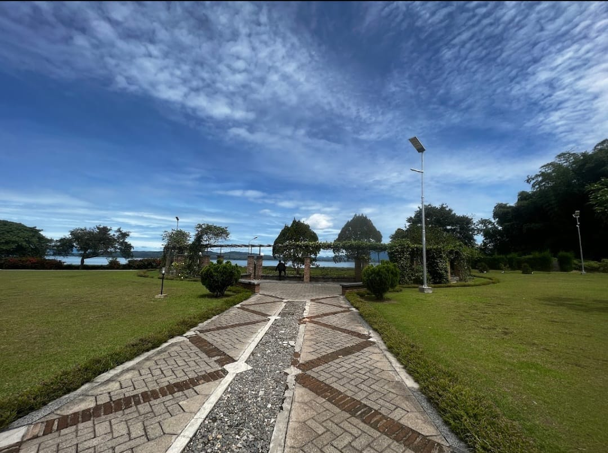

Entries
| No. | NAMA FASILITAS | DESKRIPSI | GAMBAR | ACTIONS |
|---|---|---|---|---|
| 1. | Laboratorium dan Kelas | Fasilitas laboratorium komputasi dimaksudkan sebagai sarana kerja, pendidikan, penelitian maupun pengabdian pada masyarakat. Kepada para pengguna diharapkan pengertian dan kesadarannya untuk menjaga keutuhan dan keamanan peralatan yang ada, serta berperan dalam menciptakan suasana akademik yang lebih berhasil guna. Kesadaran ini hendaknya diterapkan terhadap semua peralatan sarana dan prasarana yang dimiliki oleh Institut Teknologi Del dan semua sistem komputasi lain yang dapat diakses melalui jaringan komunikasi yang tersedia.. |  |
|
| 2. | Akomodasi | Seluruh mahasiswa IT Del diwajibkan tinggal di asrama yang disediakan. Hal ini untuk mendukung sistem pendidikan vokasi dimana mahasiswa akan melaksanakan kegiatan akademis terjadwal sampai sore hari ditambah kegiatan mandiri hingga pukul 10 malam hari. Dengan tinggal di asrama yang lokasinya berada di dalam lingkungan kampus, mahasiswa dapat segera beristirahat setelah melaksanakan kegiatan terjadwal di kampus. Dengan beristirahat yang cukup dan baik diharapkan performansi mahasiswa dalam setiap kegiatan di dalam kampus akan maksimal. Untuk mendukung kualitas hidup berasrama, mahasiswa akan diawasi oleh Bapak/Ibu asrama dibantu oleh Kakak/Abang asrama. Dengan peraturan asrama yang diberlakukan, mahasiswa akan hidup lebih disiplin dan berbudaya. |  |
|
| 3. | Kantin | Kantin Politeknik Informatika Del menyediakan menu makanan yang bergizi dan sehat untuk semua mahasiswa/i. Menu yang disediakan selalu memenuhi standard gizi, sehingga mahasiswa bisa melaksanakan aktifitas perkuliahan dengan sehat dan prima. Setiap mahasiswa diwajibkan untuk makan di kantin tiga kali setiap harinya. |  |
|
| 4. | Perpustakaan | Perpustakaan Politeknik Informatika Del (PI Del) berdiri sejak tanggal 9 Januari 2002 dengan sistem pelayanan open acces (terbuka). Selanjutnya berubah nama seiring dengan berubahnya status Politeknik menjadi Institut sejak tahun 2013. Perpustakaan berganti nama menjadi Perpustakaan Institut Teknologi Del. Perpustakaan Institut Teknologi Del memiliki fungsi utama yaitu fungsi pendidikan. Pengadaan koleksi dan pengembangan minat baca internal dan eksternal Institut Teknologi Del dilakukan sebagai bagian dari kegiatan diseminasi kegiatan peningkatan minat baca. |  |
|
| 5. | Hiburan dan Olahraga | Selain fasilitas untuk keperluan proses belajar mengajar, IT Del juga menyediakan sarana hiburan dan olahraga bagi warga kampus IT Del. Sarana ini dimaksudkan sebagai media untuk menghilangkan kejenuhan dari kegiatan sehari-hari di IT Del.. |  |
|
| 6. | Ruang Terbuka | Praktek umum dokter Del resmi didirikan pada bulan Mei tahun 2009, terletak disamping pintu masuk ke area kampus Institut Teknologi Del. Tujuan didirikan praktek umum ini yang terutama adalah untuk melayani siswa, mahasiswa, pegawai Del tetapi selain itu juga untuk melayani masyarakat disekitar lingkungan kampus. Praktek umum ini bersifat sosial, non-profit, tetapi juga tetap berusaha menjaga mutu pelayanan agar sesuai dengan standar pelayanan termutakhir. Praktek umum ini juga bekerja sama dengan Jamsostek sebagai PPK I untuk melayani pasien-pasien yang terdaftar sebagai tanggungan Jamsostek dalam wilayah ini. Praktek umum ini bisa melayani pengobatan dasar (meliputi anak dan dewasa) hingga yang membutuhkan tindakan bedah sederhana. Di dalam praktek umum ini juga sudah tersedia obat sehingga tidak perlu membeli obat lagi di tempat lain. Saat ini praktek umum ini sedang dalam proses pengembangan menjadi klinik Yayasan Del. |  |
|
| 7. | Klinik | Fasilitas laboratorium komputasi dimaksudkan sebagai sarana kerja, pendidikan, penelitian maupun pengabdian pada masyarakat. Kepada para pengguna diharapkan pengertian dan kesadarannya untuk menjaga keutuhan dan keamanan peralatan yang ada, serta berperan dalam menciptakan suasana akademik yang lebih berhasil guna. Kesadaran ini hendaknya diterapkan terhadap semua peralatan sarana dan prasarana yang dimiliki oleh Institut Teknologi Del dan semua sistem komputasi lain yang dapat diakses melalui jaringan komunikasi yang tersedia.. |  |
|